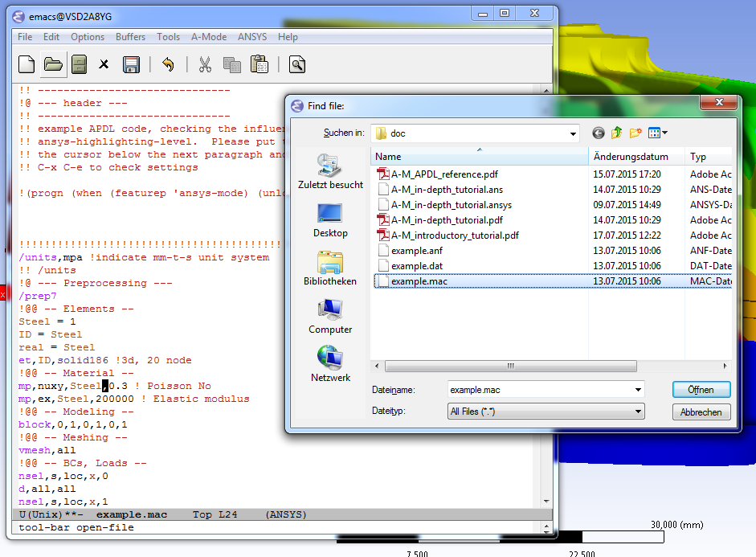

Guided ANSYS-Mode hands-on Tutorial
Table of Contents
######################################################################
##+DATE: 2012-06-17 Sa
##+LaTeX_CLASS: koma-report ##+LaTeX_CLASS: koma-article
##+LATEX: \tableofcontents
Introduction
#
Being an editor mode, we are mainly dealing with text, i. e. APDL code. But also many things in this language's context.
Since the relevance of APDL remains tall: `WorkBench' operates exclusively the ANSYS solver with it! While for many applications WorkBench is taking over the "code authoring" part from the user, use APDL for repetitive tasks and command snippets, extending WB.
Target audience
- APDL coders
- You have repetitive tasks and write APDL
- Users of WorkBench using command snippets
- extending WorkBench
- WorkBench users interested in the true understanding
- of their tool, The WorkBench manual is informative but if you really must know how a `remote force' is implemented and what the options really mean. You have no other choise as exporting the solver input file (.inp) and studying it with the APDL command reference.
Using this tutorial
Please read the introductory ANSYS-Mode tutorial first
This is the file `A-M_introductory_tutorial-16.1.1.pdf' in the mode's archive or use its online version.
Ah yes, you are in a hurry (I thought so). In summary: You will get an illustrated overiew how ANSYS-Mode can improve your workflows and that the software is available without any costs and with (practically) no license restrictions also for commercial use.
Simply download the proper mode archive, extract it anywhere. For the Windows version with the pre-configured mode all system independent things should run without the need of any configuration.
In the following bold character combinations like C-c or M-c mean typing the <CTRL> key or <ALT> (formerly called `Meta') key together with the <c> key.
Please, please work through this tutorial side by side with Emacs
Especially for the APDL examples, which look like the following code line.
/com,Hello world !This font represents APDL code!
All necessary APDL code for working hands-on on the following examples is available in a supplementary file, as described further down.
APDL viewing
You can achieve all actions in this section from the menu or with keyboard shortcuts.
Open some WorkBench solver input file
Drag and drop it on Emacs or use the `File' menu:

(Shortcut C-x C-f) … and inspect its content.
Use ANSYS-Mode's `command help'

(keybinding M-?, it is working in comment lines as well)
Open the `ANSYS help browser'
for further assistence. (Keybinding C-c C-h)
Navigate through the `number blocks' in .dat files
Skip the node- and element blocks with the menu entry ANSYS: Work_with_locical_blocks: End_of_number_block etc. (Keybinding C-c {)
APDL editing
Use the log file from ANSYS Classics to get APDL
Extensible APDL templates
Some of the existing templates are collections of (all) available commands to certain subjects. They are more intended to be previewed and only parts of it might be copied and inserted. Others are self-contained "mini simulations" or skeletons for starting a new project or, respectively, supplementing an existing one. These are more apt for their complete insertion.
You can build your own library. Everything is extensible in Emacs and ANSYS-Mode, not only the APDL templates!
Open this tutorial's APDL source file
!! Open `A-M_in-depth_tutorial-16.1.1.ansys' with "C-x C-f"! You can take this !! file from the latest mode's archives.
Inspect available code templates
Screenshot with the ANSYS Classics GUI (left) and Emacs (right) on Win64

!! Check out all available and extendable APDL templates! !! Type "C-c C-s" to trigger the ANSYS-Mode template preview !! and then the <TAB> key for a completion window. !!

Preview the APDL `function' template of parametric- and *get functions
!! Write now "ansys-skeleton-function"! Let Emacs complete !! your input (use the <TAB> key). Conclude it with <RET>. !!
Add a certain code template to your APDL code
!! Insert below the following line the structural template! Type !! "M-x ansys-skeleton-structural-template" for insertion instead of !! previewing. (You can insert a template with "C-u C-c C-s" as well.) !!
After giving a short description, it should look like this:
!! "M-x ansys-skeleton-structural-template" for insertion instead of !! previewing. (You can insert a template with "C-u C-c C-s" as well.) !! ------------------------------ !@ --- file header --- !! ------------------------------ !! Time-stamp: <Sat Jun 23 02:47:11 2012> !! ANSYS VERSION: 140 !! UNITS: mm-t-s !! NOTE: template example !! ------------------------------ ! fini ! /clear ! y /units,mpa !indicate mm-t-s unit system !@ --- Preprocessing --- /prep7 !@@ -- Elements -- Steel = 1 ID = Steel real = Steel et,ID,solid186 !3d, 20 node !@@ -- Material -- mp,nuxy,Steel,0.3 ! Poisson No mp,ex,Steel,200000 ! Elastic modulus !@@ -- Modeling -- block,0,1,0,1,0,1 !@@ -- Meshing -- vmesh,all !@@ -- BCs, Loads -- nsel,s,loc,x,0 d,all,all nsel,s,loc,x,1 d,all,uy,-.1 allsel save !@ --- Solving --- /solu solve !@ --- Postprocessing -- /post1 plnsol,u,sum,2
!! Insert below the following line `ansys-skeleton-outline-template'! !!
The idea is to have a skeleton for starting a new APDL project.
!! Insert below the following line `ansys-skeleton-outline-template'! !! !@ ============================== !@ --- Header --- !@ ============================== !! FILENAME: /home/dieter/ansys-mode/trunk/APDL_tutorial.ansys !! CREATION DATE: Tue Jun 26 01:02:07 2012 !! ANSYS VERSION: 140 !! DESCRIPTION: outline example !@ ============================== !@ --- Setup --- !@ ============================== finish !@ ============================== !@ --- Preprocessing --- !@ ============================== !@ ------------------------------ !@@ -- Cad Import -- !! ------------------------------ !! /aux15 !@ ------------------------------ !@@ -- General Preprocessing -- !! ------------------------------ /prep7 !! .............................. !@@@ - Materials and element types - !! .............................. !! --- Solids --- !! --- Contacts --- !! .............................. !@@@ - Geometry - !! .............................. !! .............................. !@@@ - Meshing - !! .............................. !! .............................. !@@@ - Boundary conditions - !! .............................. !@ ============================== !@ --- Solution --- !@ ============================== /solu allsel !@ ------------------------------ !@@ -- Solution controls -- !! ------------------------------ !@ ============================== !@ --- Postprocessing --- !@ ============================== !@ ------------------------------ !@@ -- General Postprocessing -- !! ------------------------------ /post1 !@ ------------------------------ !@@ -- Time-History Postprocessing -- !! ------------------------------ /post26
Extend or create a template
Check out the code for a template, the Emacs self-documenting help principle will guide you to its definition file.
!! Type "C-h f" for Emacs' function help and write !! "ansys-skeleton-structural-template" (let Emacs complete it)! !!
May the source be with you!
!! In the *help* window follow the link to the source file !! directly to the relevant skeleton function.
You can modify, extend or create new code to your hearts content.
Outline and folding your code
!@, !@@, !@@@ are the heading indicators
!! Type "C-c @ C-t" to collapse the code to its headings !! Type "C-c @ C-e" to show a certain entry of a heading !! Type "C-c @ C-a" to show all again !!
Helpful to get an overview of large APDL file.
!@ ============================== !@ --- Header --- !@ ==============================... !@ ============================== !@ --- Setup --- !@ ==============================... !@ ============================== !@ --- Preprocessing --- !@ ==============================... !@ ------------------------------ !@@ -- Cad Import --... !@ ------------------------------ !@@ -- General Preprocessing -- ... !@@@ - Materials and element types -... !@@@ - Geometry -... !@@@ - Meshing -... !@@@ - Boundary conditions -... !@ ============================== !@ --- Solution --- !@ ==============================... !@ ------------------------------ !@@ -- Solution controls -- ... !@ ============================== !@ --- Postprocessing --- !@ ==============================... !@ ------------------------------ !@@ -- General Postprocessing -- ... !@ ------------------------------ !@@ -- Time-History Postprocessing --...
Open now one entry with C-c @ C-e (in a line with 3 dots)
!@ ============================== !@ --- Header --- !@ ==============================... !@ ============================== !@ --- Setup --- !@ ==============================... !@ ============================== !@ --- Preprocessing --- !@ ==============================... !@ ------------------------------ !@@ -- Cad Import --... !@ ------------------------------ !@@ -- General Preprocessing -- ... !@@@ - Materials and element types -... !@@@ - Geometry -... !@@@ - Meshing -... !@@@ - Boundary conditions -... !@ ============================== !@ --- Solution --- !@ ============================== /solu allsel !@ ------------------------------ !@@ -- Solution controls -- ... !@ ============================== !@ --- Postprocessing --- !@ ==============================... !@ ------------------------------ !@@ -- General Postprocessing -- ... !@ ------------------------------ !@@ -- Time-History Postprocessing --...
In above example it was the entry below the `Solution' heading.
Comments
Place comments
!! Type "M-;" in the empty line below the code !! *if,I,eq,2,then
which places the comment characters (here `!! ') already with the right indentation
!! Type "M-;" in the empty line below the code !! *if,I,eq,2,then !!
Commenting out
!! Mark some text above (e. g. dragging the mouse with LMB or you !! can mark the section with "M-h") and then type "M-;" !!
After marking the whole paragraph with "M-h" and typing "M-;" above code should look like the following
!! !! Type "M-;" in the empty line below !! *if,I,eq,2,then !! !!
Uncomment the code
!! Mark above commented out code and retype "M-;" !!
Here we are again
!! Type "M-;" in the empty line below *if,I,eq,2,then !!
Place inline comments
!! Type "M-;" somewhere in the following code line !! nsel,s,loc,x,0,1
M-; does the right thing and places a comment character behind the code:
!! Type "M-;" somewhere in the following code line !! nsel,s,loc,x,0,1 !this is an `inline comment'
!! Place the cursor in this line and type "M-;" !! nsel,s,loc,x,0,1!another inline comment
For an existing inline comment M-j indents it and skips the cursor to the comment beginning.
!! Place the cursor in this line and type "M-;" !! nsel,s,loc,x,0,1 !another inline comment
Is this not nicely thought out from Emacs' developers, is it?
Continue and indent your comments
In inline comments
!! Type "M-j" behind the inline comment !! nsel,s,loc,x,0,1 ! this is an `inline comment'
!! Type "M-j" behind the inline comment !! nsel,s,loc,x,0,1 ! this is an `inline comment' ! continued above comment
In regular comments
*if,I,eq,1,then !! Type "M-j" behind this line *endif !! Emacs will break the line, insert and indent properly comment characters
Emacs places comment characters for you, properly indented also within logical block structures.
*if,I,eq,1,then !! Type "M-j" behind this line !! *endif
Check out ANSYS-Mode's built-in documentation
It is allways with you.
!! Type "C-h m" for reading the built-in mode help !! search for the section with its keybindings! !!
APDL variable listing
The listing is an alternative to the `*status' command and includes also implicit definitions (*vget, etc.) and component names and the respective line No.
!! Type "C-c C-v" for a summary window of variable definitions !! This includes also implicit definitions and component names !!

Align your variable definitions

!! Place the cursor on the following section and type "C-c C-a" !!
x=0.4!laskd y= 33.0 ! alskdl xzv= 9999990.3 !! llk = 0.333333333 !bla al_= 00.40 aslfoeas = 304 ka= .4 !salkd i = 4. !as kasd=.3/0.4 kasd =3./0.4 xxx =asin(3.0) y = cos(i)
The result looks like the code below, with the numbers aligned around the decimal point
Yes, these assignments are a mess (intentionally), but imagine how nifty it will look with your code!
x = 0.4 !laskd y = 33.0 ! alskdl xzv = 9999990.3 !! llk = 0.333333333 !bla al_ = 00.40 aslfoeas = 304 ka = .4 !salkd i = 4. !as kasd = .3/0.4 kasd = 3./0.4 xxx = asin(3.0) y = cos(i)
!! Mark only a PART of following section and type "C-c C-a" !!
x=0.4!laskd y= 33.0 ! alskdl xzv= 9999990.3 !! llk = 0.333333333 !bla al_= 00.40 aslfoeas = 304 ka= .4 !salkd i = 4. !as kasd=.3/0.4 kasd =3./0.4 xxx =asin(3.0) y = cos(i)
The result might look like this:
x=0.4!laskd y= 33.0 ! alskdl xzv= 9999990.3 !! llk = 0.333333333 !bla al_= 00.40 aslfoeas = 304 ka = .4 !salkd i = 4. !as kasd = .3/0.4 kasd = 3./0.4 xxx =asin(3.0) y = cos(i)
Completions (around 2000 ANSYS symbols)
Case sensitive completions except for mouse completion
!! Check out all APDL symbols, up to date with the latest ANSYS version !! Place the cursor behind the 'c' character below and type "<ESC> <TAB>" !! c
The completion window should look like the following:

!! Let Emacs complete `cml' and apply (again) "M-?" !! cml
Gives you the `cmlist' command
!! Let Emacs complete `cml' and apply (again) "M-?" !! cmlist
Completion of functions
Completed function names have parentheses appended #+begin_src ansys !! place the cursor behind 'aco' and type "<ESC> <TAB>" and so forth !! #+end_src ansys #+begin_src ansys P = aco ! lower case completion P = Sig ! upper case completion P = ARNE ! Capitalisation #+end_src ansys Note that the cursor after the completion is conveniently placed inside the parentheses. The completions are unique in above examples and expand immediately to: #+begin_src ansys :tangle no P = acos() P = Sign() P = ARNEXT() #+end_src ansys
Completion of elements
ANSYS-Mode also complets ANSYS deprecated element names but warns you with a distinct highlighting! #+begin_src ansys !! Completion of element names: type "<ESC> <TAB>" behind `shell' !! shell #+end_src ansys
Completion of commands
#+begin_src ansys !! Completion of command names: type "<ESC> <TAB>" behind `a' !! a #+end_src ansys #+begin_src ansys !! Note Emacs' message that `a' is already a valid ANSYS symbol! !! It is highlighted already as a command, but it is further completable. #+end_src ansys
Dynamic completion
Is a completion on the basis of the window's content, the following example will demonstrate what this means.
!! some code... very_long_Variable = 3 vlV = 8 !! type "M-/" repeatedly behind below character `v' !! v
After typing the first time M-/:
!! type "M-/" repeatedly behind below character `v' !! vlV
Emacs is looking above what matches the 'v' and finds `vlV' from the assignment `vlV = 8'.
After typing the second time M-/:
!! type "M-/" repeatedly behind below character `v' !! very_long_Variable
Abbreviations facility
Use the ANSYS-Mode defined abbreviations
!! type a <SPACE> behind the special character ``' and abbreviation characters !! `p ! The Pi assignment abbreviation `d ! Abbreviation of a *do loop `do ! Interactive *do loop abbrev.
The abbreviations expand to:
!! type a <SPACE> behind the special character ``' and abbreviation characters !! Pi=3.14159265359 ! This is the Pi assignment *do,I,1,10,1 *cycle !bypass below commands in *do loop *enddo ! Abbreviation of a *do loop *do,I,1,,1 *enddo ! Interactive *do loop abbrev.
Inspect available abbreviation definitions from ANSYS-Mode. Display all (locally) defined abbreviations with C-u M-x list-abbrevs
!! Type a "C-u M-x list-abbrevs" for a list of all mode defined abbreviations !!
Logical blocks
or control statements in "lesser" programming languages ;-)
Closing of logical blocks
!! Place the cursor below or behind the block statements and type "C-c ]"! !! *if,1,eq,1,then *do,1,10 *dowhile,1 *create,test,mac
Voila for every logical block type the proper closing statements:
!! Place the cursor in the empty lines and type "C-c ]"! !! *if,1,eq,1,then *endif *do,1,10 *enddo *dowhile,1 *enddo *create,test,mac *end
Auto-indentation
!! Insert in between the following block e. g. a `*do' statement! !! Conclude the line(s) with "C-j" to receive an automatic indentation. !!
*if,I,eq,1,then /title,well well *endif
The line is indented too (don't forget to apply the shortcut C-c ] for closing blocks)
*if,I,eq,1,then *if,J,eq,2,then /com,the line is indented, close it with "C-c ]" *endif /title,well well *endif
Use the Emacs integrated RPN Calculator
RPN means Reversed Polish Notation, HP calculators are using this arguably superior input convention. Please read the `Calc' documentation (C-h i for accessing Emacs the documentation system). There is also a nice reference card for its keybindings.

Type C-x * * to open the calculator, type y for copying results directly into the APDL file. q to quit the 'Emacs Calc' windows.
!! Place the cursor behind the equal sign and type "C-x * *"! !! Pi = !! Type "P" (capital `p') in `Calc' and paste the value back into !! your APDL code with the <y> key, quit Calc with <q>.
You are receiving
!! Place the cursor behind the equal sign and type "C-x * *"! !! Pi = 3.14159265359 !! Type "P" (capital p) in `Calc' and paste the value back into
You might round the input
!! Type "df" in Calc for `display fixed' and then <3> before pasting !! Pi =
We are receiving now a more compact approximation of pi
!! Type "df" in Calc for `display fixed' and then <3> before pasting !! Pi = 3.142
I should have thought about a better example:
!! Maybe above example is not so relevant because many of you are just !! using Pi = acos(-1) !! instead, but I hope you are getting the idea why to use Calc ;-)
Highlighting APDL specials
TODO! for this tutorial: Colour the code snippets.
Reserved words and _RETURN statements
!! N = _RETURN ! return value of certain commands _aaa = 9 ! reserved variables: preceding underscore "_" d,1,ux,%_FIX% ! “current” relative displacement value Depth = ARG1 ! ARG{1-9}, AR{10-19} = "*use" variables
Old style APDL comments
var1 = sinh(cos(3 *5)) ! old style Ansys comment!!!!! var2 = sinh(cos(3*5)) ! this is valid code !!
Ignored characters behind commands
f $ fi $ fin $ fini $ finis $ finish $ finisher !!
The End Of File command
/eof --- WARNING: /eof crashes the Ansys GUI in interactive mode --- !!
Current element types and deprecated elements
!! A current element type: et,10,solid186 !! deprecated element types: et,Steel,beam3 $ et,Alu,shell91 !!
Let's change the element types to current ones!
!! Complete the following element fragments to current ones! !! et,Steel,beam $ et,Alu,shell
For example select the following elements
et,Steel,beam188 $ et,Alu,shell28
and you are getting a diffent element highlighting.
APDL environment
The APDL processing and debugging environment Finally switch off unnecessay stuff: Emacs' menu-, tool- and scroll-bar to get more screen estate. :-) And tidying the window with removing above code.
!! Erase all APDL code above ("M-< C-w") !!
Choose the license type for a run
!! Type "C-c C-t"! And select the required license type Use the !! <TAB> key to see the predefined types
Display the license status
!! Type "C-c C-l"! Checking which licenses are free, in particular !! your chosen license !!
Your Desktop might look like the following: In Emacs' mid-section you see the license state (C-c C-l). Highlighted in red is your chosen license type. And in the left hand Emacs window below a thumbnail view of images from a folder.
##+ATTR_LaTeX: height=7.3cm

Start the ANSYS `solver/interpreter'
!! Type "C-c RET"! !!
Communication with the interpreter
Sending window (APDL file) contents
The window is called a buffer in Emacs terminology, when you are saveing the buffer content then it represents the file content. To make everything unclear. ;-)
!! Reinsert the `structural' template below !!
Send a code line or region
Any time you communicate with the interpreter its output is shown in
the *ANSYS* interactive window.
!! Go to the beginning of above code and !! send the code line by line with "C-c C-c"! !!
Send above code (from the cursor up to the beginning)
!! Place the cursor below the `solve' command and !! type "C-c C-u" sending all code up to the beginning! !!
C-c C-u, C-c C-c have changed their behaviour with the running interpreter. Without a running ANSYS process they are sending the code to the system clipboard instead.
!! We have got now data and results to work with
Graphical feedback and graphics interaction
Receive graphical feedback from the interpreter
Open the `interactive graphics' window of ANSYS
!! Type "C-c C-g" to open the ANSYS `interactive' graphics frame. !! Then send the following line with "C-c C-c". !! eplot
##+ATTR_LaTeX: height=6.5cm

Unfortunately there are 4 severe restrictions using this approach. Firstly: It is not possible to interact directly with the graphics except with APDL commands and through the Pan/Zoom/Rotate dialog! This means there is no `picking' possible. And secondly: As long as the dialog is open no other communication is possible! And thirdly: The size of the graphics is fixed. And fourthly: You must replot every time the graphics frame was hidden by other graphics (Desktop switching, etc.)!
Open the ANSYS Pan/Zoom/Rotate dialog
!! Type "C-c C-p" to open the ANSYS Pan/Zoom/Rotate dialog! !!
To alleviate these severe restrictions ANSYS-Mode provides keybindings for replotting, zooming, fitting and moving graphical objects.
Use the keybindings for zooming
!! "C-c C-+" Enlarge it !! "C-c C-f" Fit the graphics !! "C-c C--" Shrink it !!
Use the keybindings for moving
!! "C-c C->" Move right !! "C-c C-_" Move down !! "C-c C-<" Move left !! "C-c C-^" Move up !!
Hint: Use Emacs `repeat' command C-x z, after its use already the <z> key alone is repeating your command!
!! For these long keybindings Emacs' `repeat' command "C-x z" is helpful !! Insert "C-c C-<" and then "C-x z zzzzz" !!
Use the keybindings for replotting and iso-view
!! "C-c C-i" Show in Iso-view !! "C-c C-r" Replot the graphics !!
Sending directly to the interpeter
Direct communication from the APDL window
!! Type "C-c C-q" and send your input directly to the interpreter! !! You are getting `queried' for input by Emacs. !! Input here: "/post1 <RET>" and then "C-c C-q set,list" !!
Direct communication from the *ANSYS* interactive window
!! Place the cursor in the *ANSYS* interactive window and write !! "plnsol,u,sum", conclude the input with <RET>. !!
Visiting the ANSYS error file
The solver error file (\*.err) is opened in tail-follow mode, i. e. you are seeing always the latest contend. (C-c C-e)
!! Type "C-c C-e" to open the run's error file in `tail-follow mode'! !! Always the latest content is shown... !!
Appendix
Regarding Emacs' keybindings
Even when these keybindings at first seem foreign and unhandy, an additional advantage getting used to them is the fact that the bash shell can also be operated with the most often used.